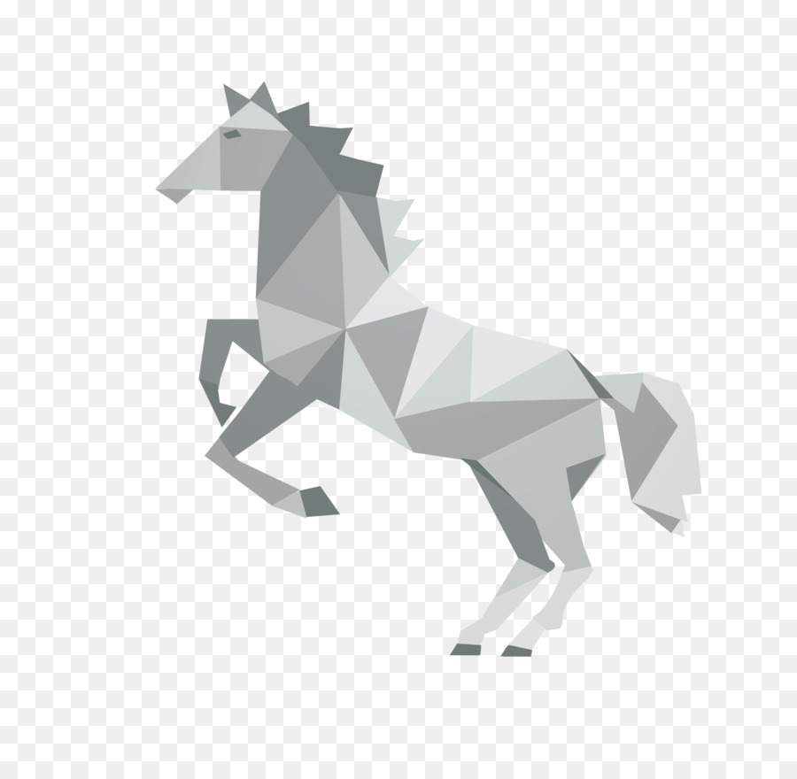

Camels

Interesting Facts about Camels.
- There are two types of camels: One humped or “dromedary” camels and two humped Bactrian camels.
- Camels have thick lips which let them forage for thorny plants other animals can't eat.
- Camels have three sets of eyelids and two rows of eyelashes to keep sand out of their eyes. CLICK HERE
Chameleon

Interesting Facts about Chameleon.
- Chameleon are reptiles that are part of the iguana suborder.
- Changing skin color is an important part of communication among chameleons.
- Most chameleons have a prehensile tail that they use to use to wrap around tree brancher. CLICK HERE
Pigeon

Interesting Facts about pigeon.
- Pigeon are incredibly complex and intelligent animals.
- Pigeon have excellent hearting abilites.
- Pigeon are renowned for their outstanding naigational abilites. CLICK HERE
Teddy

- The term bear-hug was first recorded in 1846.
- The Oxford English Dictionary dates the first use of the term teddy bear to 1906.
- In 1902 in Germany, Steiff launched “Bear 55 PB”, the first toy bear with jointed arms and legs. CLICK HERE
Panda

Interesting Facts about Panda.
- They have great camouflage for their environment.
- Their eyes are different to narmal bears.
- Cubs are well protected in their first month. CLICK HERE
Flying-cicada

Interesting Facts about Flying-cicada.
- There are more than 3,000 species of cicadas.
- Cicadas make noise like toy frogs.
- Their enemies are the stuff of nightmares. CLICK HERE
ButterFly
Interesting Facts about ButterFly.
- Butterflies are beautiful,flying insects with large scaly wings.
- Like all insects, they have six jointed legs, 3 body parts, a pair of antennae, compound eyes, and an exoskeleton.
- The butterfly's body is covered by tiny sensory hairs. CLICK HERE
Horse
Intresting facts about horse.
- Horses can sleep both lying down and standing up.
- Horses have around 205 bones in their skeleton.
- Domestic horses have a lifespan of around 25 years. CLICK HERE